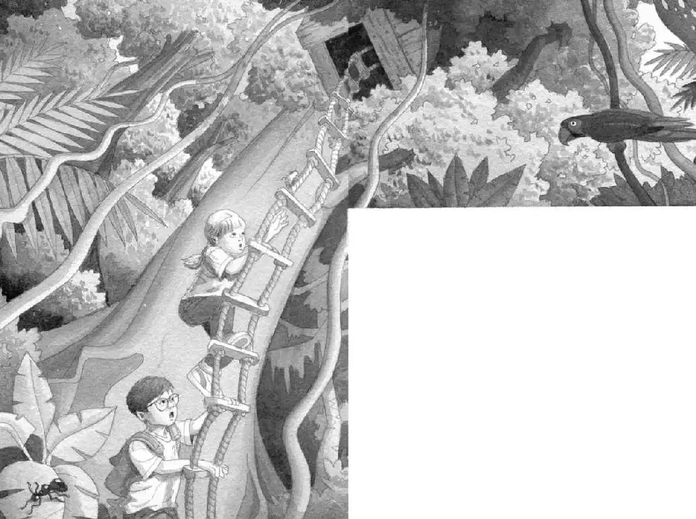

“Wait—” said Jack, panting. “I think we got away.”
Jack and Annie stopped running and caught their breath.
“Where are we?” said Jack.
“Where’s the monkey?” said Annie, looking back at the forest. “Do you think the jaguar caught him?”
“No, monkeys are fast,” said Jack.
Of course, jaguars are fast, too, Jack thought. But he didn’t want to tell Annie that.
“I hope he’s okay,” said Annie.
Squeak. Peanut peeked out of Annie’s pocket.
“Peanut! I almost forgot you!” said Annie. “Are you okay?”
The mouse just stared at Annie with her big eyes.
“She looks scared,” said Jack. “Poor Peanut.”
“Poor monkey,” said Annie. She looked around at the forest.
“We’d better check the book,” Jack said.
He pulled out the book. He turned the pages, searching for help.
He stopped at a picture of a scary creature.
“Oh, man. What’s this?” he said.
Jack read the writing below the picture. It said:
Vampire bats live in the Amazon rain forest. At night, they quietly bite their victims and suck their blood.
“Vampire bats?” said Jack. He felt faint.
“Vampire bats?” said Annie.
Jack nodded. “After dark.”
Annie and Jack looked around. The rain forest seemed to be getting even darker.
“Yikes,” said Annie. She looked at Jack. “Maybe we should go home.”
Jack nodded. For once he agreed with her.
“But what about our mission?” said Annie. “What about Morgan?”
“We’ll come back,” said Jack. “We’ll have to be prepared.”
“So we’ll come back tomorrow?” Annie asked.
“Right. Now which way is the tree house?” said Jack.
“This way,” said Annie, pointing.
“That way,” said Jack, pointing in the opposite direction.
They looked at each other. “We’re lost,” they said together.
Squeak.
“Don’t worry, Peanut.” Annie started to pat the mouse again. But then she stopped.
Squeak. Squeak. Squeak.
“Jack, I think Peanut wants to help us,” said Annie.
“How?”
“The way she helped us in the time of ninjas—”
Annie placed the mouse on the leafy forest floor. “Take us to the tree house, Peanut.”
The mouse took off.
“Where’d she go?” said Annie. “I don’t see her!”
“There!” said Jack. He pointed to leaves rustling on the ground.
A streak of white passed over the leaves.
“Yes, there!” said Annie.
Jack and Annie followed the moving leaves. The streak of white appeared. And disappeared.
Suddenly Jack stopped.
The forest floor was still. There was no sign of Peanut.
“Where is she?” asked Jack.
He kept staring at the ground.
“Jack!”
Jack glanced around. Annie was standing on the other side of a nearby tree. She was pointing up.
Jack looked up.
The tree house.
“Oh, whew,” Jack said softly.
“She saved us again,” said Annie. “She’s running up the ladder. All by herself. Look.”
Annie pointed at the rope ladder.
Peanut was climbing up one of the ropes.
“Let’s go,” Jack said.

Annie started up the ladder. Then Jack.
They followed Peanut all the way up to the canopy of the rain forest.